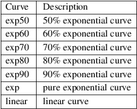

thumbnail − create a TIFF file with thumbnail images
thumbnail [ options ] input.tif output.tif
thumbnail is a program written to show how one might use the SubIFD tag (#330) to store thumbnail images. thumbnail copies a TIFF Class F facsimile file to the output file and for each image an 8−bit greyscale âthumbnail sketchâ is created. The output file contains the thumbnail image with the associated full−resolution page linked below with the SubIFD tag.
By default, thumbnail images are 216 pixels wide by 274 pixels high. Pixels are calculated by sampling and filtering the input image with each pixel value passed through a contrast curve.
−w width
Specify the width of thumbnail images in pixels.
−h height
Specify the height of thumbnail images in pixels.
−c contrast
Specify a contrast curve to apply in generating the thumbnail images. By default pixels values are passed through a linear contrast curve that simply maps the pixel value ranges. Alternative curves are:

There are no options to control the format of the saved thumbnail images.
tiffdump (1), tiffgt (1), tiffinfo (1), libtiff (3tiff),
LibTIFF contributors
1988-2022, LibTIFF contributors